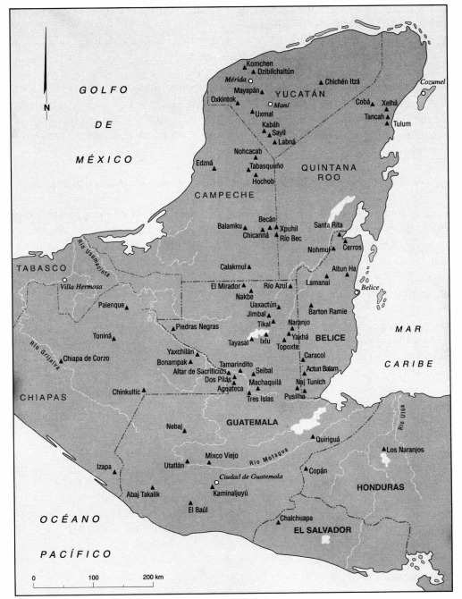
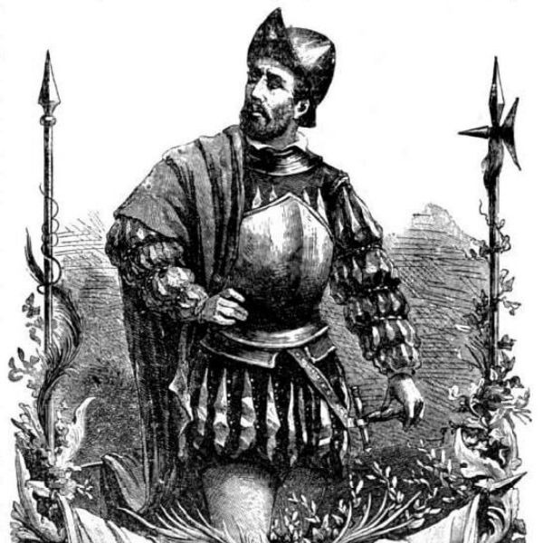
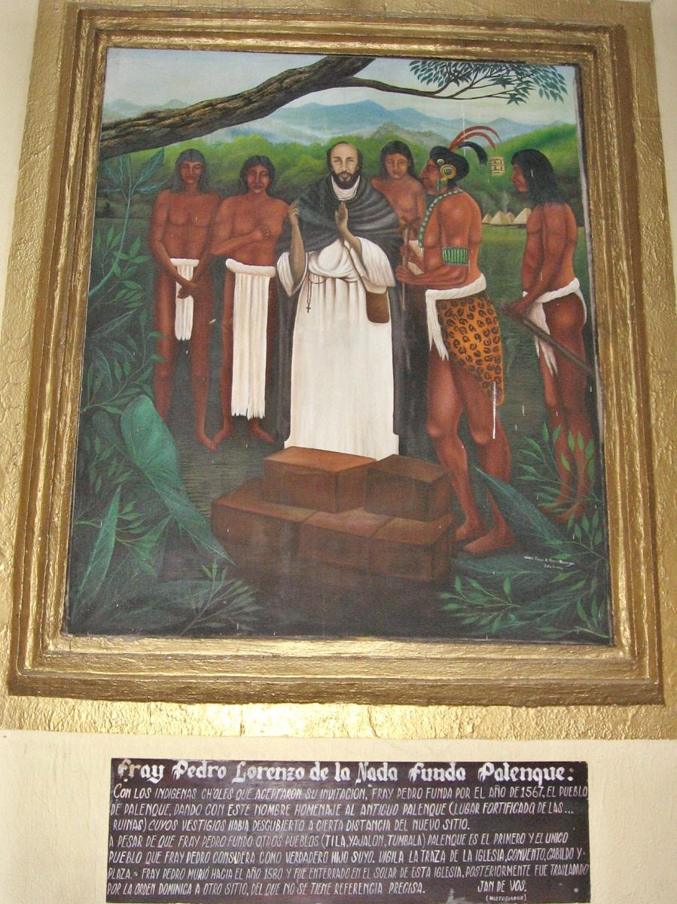
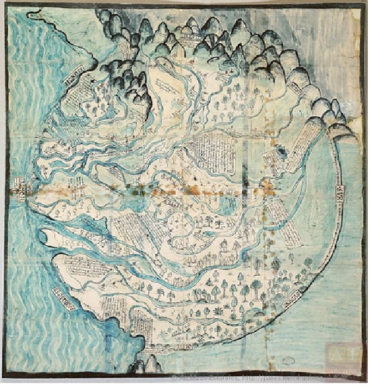
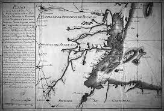

Käñtyisäñtyel yik’oty baki tyi ñaxañ chumliyo’b
Chenak ta’ix ujtyi li Käntyisäntyel weñbä ilumob xmayajob tyi ajk’i cha’an mi ixik’o-iba tyi su’boñel yik’oty cha’añ tyojoñel. Jini xch’olob ya’ tyi ajñiyob tyi ipaty ya’ tyi ityojle li pamil cha’an maj tyi Palenke tyi ity’ej majlel Acalan yik’oty Tabasku. Yu’bi che’ jini mi iyal jini Martinez pissad (1996) che jini xchontalob, xcholob yik’oty xzoquejob ya’ tyi chumliyob tyi Tabasco che’ñak ta’ix icha’leyob Käntyisa, Yu’bi jinäch xchontalob P’äjtyälbä tyi kaliyob, ixku jini xchontalob yik’oty xzoquejob tsätsach tyi käntyisäntyiyob.

Säklaya chä’bätyak yik’oty wokolel
Cha’añ mi itsätsä xijk’elob ich’ujbiñob ty’añ jiño’b xchumtyulob ya’bä añob tyi joktyälel, tyi säkläñtyiyob ba´tyak añob tyi chumtyäl. Jiñäch ajPedro de Alvarado tyi 1525 tyi iwentaji, pe sajachbi iwiñikob che’ je’e sajach ijuloñi’ob jincha’añ ma’añ tyi ise’je jotyo. Li aj yokety’año’b ka’abäla’bi ibajñelob, añ ñoj simaroño’bä ma’añ tyi iyäk’äyo’bibä, wi’iilixbi tyi ijojtyiñob, ta’tyo ipi’tyäyob mi ity’oxo’ibä cha’añ mi iju’belo’b iwersa, ojlilo’b tyi kaj ikerajiño’b ibä, ichäkiñ ichäkiñ chä’bä añ icha’añob, che’ tyi iyälä jiñi: (Jimenez, 2000; Viqueira, 2002, p. 84). Cha’añ mi lakpäsbeño’ lak’ piälob chämälo’bäj tyi lum ju’belobä, tyi ch’ajpayo’ibäj cha’añ mi laksäbeñolaj chä’bäj cha’añ mi iyots’año xPedro de Alvarado tyi 1523.ma’añ weñ k’abäj iwiñiko’b yik’oty ik’umbal li indiojob’ yäjilo’äch’ je’el iweñ yoñlelo’b imi yotsa’ñoñla tyi ity’añ o tyi e’tyel mi i k’otyaño ibä je’el imi icha’leño keraj. pejtye’ li tyañ täch’ ityoj-maj pero mi i jale’ jo’k’al ja’ (100 años). cha’añ tyi ityo’xoyo’ibäj li kixtyañojob mach’bäj utsa’ty mi i cha’leño’b wä tyi lum ik’extya’ño’ibäj jiño’jach’bij.

Xkäñtyesajo’b tyi ity’añ lakCh’ujtyaty yik’oty bajche’ tyi sokbeñtyob ipensal
Iyochi’ Xkäñtyesajob tyi ity’añ lakCh’ujtyaty cha’añ iyotsañob sokpensal tyi tyojlel xyokety’añob. Yambätyak ichajpäyob xkaxlañob jiñ bajche’ imejlelob iyochelob tyi laklum. Ya’ tyi lum käñbibä tyi k’aba’ Selva Lacandona, ila tyi lum ya’bi añob iye’tyel jiñi xsu’bty’añob Verapaz yik’oty xFray Lorenzo. Ila tyi lum ya’bi chumulob jiñi xtzeltalob añbi 30.000. kixtyañujob xch’olob ma’añbä chukulob ipeñsal jiño’tyobä imelob chuki yomo’b. Jiñi xsu’bty’añob icha’añ xFray itroñelob ikäñob lakyoketyañ cha’añ weñ imejlelob isokob lakpeñsal (tzeltal yik’oty CH’ol) cha’añbi mi imejlelob ich’ujbiñob ty´añ jiñi Xyokety’añob cha´añ ikäyob jiñi matye´el imi majlelob tyi chumtyäl ya´ ba’ añob xkaxlañob bajche tyi ilumalel Ocosingo, Petalcingo yik´oty Palenque; yambätyak bajche´ imelob tsiji’p lumalä bajche´ tyi ujtyi, Bachajon, Tumbala yik’oty Tila (Gerhad, 1991; sapper, 2024; schumann, 1973; de vos, 1980 ; viqueira, 2002 ; Jimenez, 2000). Jiñi lumaltyak chukul icha´añob xkaxlañob, yañobtyakbä ta´bi ichajpäyo ibä cha´añ imelob yambätyak yalo’b chuty lumaltyak bajche zoquejob, zentalob (tzeltales), chiapanekojob yik’oty quelenesob (tzotzilo’b).

Tsiji’b chumtyäl yik’oty kera
Ya’tyi 1560, jiño’b ajCH’olob tyi yotsäyo’ibä ya’ba añbä iyum lum ba’ ajyokety’añob jiñba’ ka’bälbä kuxul lakñoj tye’elob. Che’ jiñi tyi ñämelel kiñ, jiñi aj CH’olob tax kayo’ tyi chäme wokol cha’añ mach’ächex kixtyañujob ityunbeñtyelob che’ jachixbä ts’uku chuyes tyi ujtyiyob. Che’ili jiñi cha’ tax sujtyiyob majlel tyi iñox lumalob ya’tyi ñoj tye’elol wits, pejiñach wabä majchikalix tyi sujtyiyob bajche’ob ma’ixbä iyotyotyo jiño’ bajche’ ajYukatekos, Itzas tyäle aj Cehaches. jiñi’ cha’añ tyi ochi ik’aba ajñojtye’lob junp’e lumal majchikalbäj tyi puts’iyo’b majlel ajñojty’añob cha’añ jiñi ajkaxlañ ty’añob. Jiñi yambäl ajyoke su’ty’añ muk’bä itsäts’isañ ajcholob tyi Tabaskuj kuxultyo icha’leñ tyi (1992). Tyi su’ty’añ tyi Nahua ya’ tyi junwejlel tyi Tabasku tyi 600 ya’tyo’ tyi 900 tyi ñumelel lakch’utyaty. yoñyäl iba juntyikil kixtyañul muk’bä ipi’leña tyi ñoj bijobij yik’oty li ajChontales tyäle aj junmuch’o Choles tyi yañle ya’tyi xuk tyi xuk mulawil. Jiñi tyi ty’ojel laklextyayaty’añ bajche’ob a Choles tyäle ajNahuas ch’ujbil ipäk’e li poryaty’añ tyi Nagual ba’li Ch’ol che’ bajche’ lity’añ kakte’ huarache’, chikib canasta tyäle tamal. Jiñi li aj tyejchibo’lob choles tyi Tabasku iyälo’ ya’ yoke chumulob ba’ñojwits. Yä’äch ba’tyi ajñiyob aj wukp’ejo’ su’ty’añ dios ya’tyo tyi Tecpatán tyäle jiñi ajñoj tye’el ty’añ dios Landa cha’añ su’etyi tyojel.

Xik’ol cha’añ iyumiyob lumtyak
Tsabä weñ cha’leyob pästyañ jiño´äch ajTomas yik´oty Alonso “Santo Domingo” tsabi ñämiyob tyi ilumal jiñi lakpiä’lob ajzoquejob chumulob bä tyi Oxolotan, tas¡bä ikaj ik’ajtyiñob cha’añ mi ipäjtyel ich’uju otyoty. Jiñca’añ tyi kayob tyi chäkiya lum tyi ñojtye’el Tabasku tyi (1546 y 1547) tsabi kajliyob ña´tyañob (Martínez 2012, pp. 45-47). Tyi 1699 tsabi ñämiyob tyi ilumal ajch´olob, cha’añ mi ichâkiñob lumtyak, jiñäch ajespañolob yik’oty aj-etyel sargentu Rodriguez Camilo jiñ¨ch ik´aba’. Tsa säklayob 83 kixtyañujob, yik’oty 16 ajyokety’añob tyi Amatique, chatyikil ajch´olob, 36 infantes (solarujo) 31 ajkuchelo´. Ikaj ili chäkiya cha’añ mij chuty-añ ilumalel ajmayajob, cha´añ mi imalob roñel, jiñcha’añ tyi päjyiyiob majlel ya’ tyi chumli’ ikaba las bodegas läk´älel Castillo de San Felipe tyi golfo Dulce, cha´añ mi´ (utsbiño´someter) tyi (tyañ iyumo´ ajsu’ty’añob tyi klesya). Ma’ix bi ma´añ tyi tyajayob wokol jiñi ejercito hispanos max bi ma’añ weñ chajpäbilo ibä li ajyokety’añob muk´bi mi iñoj ibäñañtyelob jiñob aj mopanes, weñ simaroñobi, iweñ tyä’leñtyelob juñi ajchumtyälob jiñ cha´áñ laj españolojob tyi k´äjñiyob cha´añ yochelob tyi mosojiñtyel tyi ilumalel ajespañol. Tsa bi tyajayo 70 kixtyañu yañtyakbä ajtyañob yiko´ty lumalob tyi päyäyomalel je’el. Añ jump´ej ña´tyäñtyel tyi ts’ijb mi yäl jiñi ajtsentalob tsabij ikajliyo’ tyi ochel majlel tyi ilumal ajtabaskujob che mil yäl ajMartinez (1996) li ajtzentalob tsabi kaliyo ipojo jiñi lumtyak ba’ chumulo´ajtabaskujob jiñ cha´añ tyi 1743 tsa bi ichaleyo kera tyi lumal tabasku y Chiapas, jiñ cha´añ tyi majliyob tyi wits Bulujes ilumal ajtabaskujo´. Tsa bi kajliyo´ipojo´jiñi lumal ajtabasku , che’ jiñi tsabi käyäyob jiñi ilumalob tabasku cha´añ tyi chä´imäyob Chiapas jiñi ilumalel tabasku , che’bi tyi ujtyi wajali wä tyi ilumal Oxolotan.

Conquista y Ubicación Inicial
Después de la conquista española, el territorio que comprendía las Tierras Bajas Mayas fue cedido a las encomiendas para su evangelización y pago tributario. En ese entonces, los ch’oles se localizaban en la parte sur hacia Palenque, extendiéndose en menor proporción hacia Acalán y Tabasco. En este último caso, se sigue el testimonio de Martínez Assad (1996) quien cita que grupos chontales, choles y zoques subsistieron en Tabasco después de la conquista. De estos, solo los chontales tuvieron una presencia significativa, mientras que los otros dos enfrentaron un fuerte proceso de ladinización.
Expediciones y Desafíos
Para someter a los grupos que habitaban las Tierras Bajas se organizaron expediciones de conquista y entradas. La primera expedición estuvo a cargo de Pedro de Alvarado en 1525 y contó con pocos hombres y armas. Los indios eran superiores en número a los conquistadores, además de insumisos y sin compasión. Pese a todo, se alcanzó éxito después de un proceso que duró más de cien años debido a la desfragmentación del tejido social que sufrían estas poblaciones como resultado de pleitos internos y enemistades entre grupos (Jiménez, 2000; Viqueira, 2002, p. 84).
Evangelización y Estrategias
Intrusiones religiosas hechas por misioneros españoles para evangelizar y conquistar. Otra de las estrategias empleadas por los españoles fueron las entradas. En el territorio conocido como la Selva Lacandona, estas estuvieron a cargo de los dominicos de la Verapaz y, en especial, de fray Lorenzo de la Nada. En este territorio habitaban los tzeltales y más de 30 000 personas ch’oles no conquistados que gozaban de autonomía. Por esta razón, la labor evangelizadora del fray requirió el aprender ambas lenguas (tzeltal y ch’ol) para persuadir a los indios a abandonar la selva y trasladarse a poblaciones españolas como Ocosingo, Petalcingo y Palenque; o, en su caso, fundar otras poblaciones como ocurrió con Bachajón, Yajalón, Tumbalá y Tila (Gerhard, 1991; Sapper, 2004; Schumann, 1973; De Vos, 1980; Viqueira, 2002; Jiménez, 2000). Las poblaciones controladas por españoles se organizaban en provincias de zoques, zendales (tzeltales), chiapanecas y quelenes (tzotziles).
Reubicación y Sublevación
Hacia 1560, los ch’oles se añadieron a la provincia de los zendales donde imperaba un contexto de múltiples identidades (Viqueira, 2002, p. 100). Con el paso del tiempo, los ch’oles terminaron por sublevarse debido al trato inhumano del que fueron objeto. Esto permitió su regreso al antiguo territorio ch’ol situado al abrigo de las montañas, solo que ahora iban acompañados por un grupo mixto de refugiados compuesto por yucatecos, itzas y cehaches. Así, la Selva Lacandona se constituyó como lugar de refugio para distintos grupos mayas que huían del dominio español. Otro de los autores que sitúa a los ch’oles en Tabasco alrededor de este periodo es Vivó (1992). En su descripción de la dominación Nahua de la parte occidental de Tabasco del 600 al 900 d.c. hace alusión a un señorío que compartía fronteras con los chontales y zoques al este; y con grupos ch’oles en una gran porción del área occidental. La evidencia del contacto lingüístico entre ch’oles y nahuas puede rastrearse en la existencia de préstamos léxicos del náhuatl al ch’ol en palabras como kakté ‘huarache’, chikib ‘canasta’ y tamal. De estos primeros ch’oles de Tabasco se dice que habitaban principalmente en las zonas montañosas. Lugar a donde acudieron siete doctrineros desde Tecpatán y el obispo Landa para evangelizarlos.
Orden y Incursiones
La orden que más influyó fue la de los Predicadores de Santo Domingo en la figura de Tomás Casillas y Alonso de Villalva quienes realizaron misiones entre los zoques de la sierra de Tabasco entre 1546 y 1547 para posteriormente gestionar el convento de Oxolotán (Martínez 2010, pp. 45-47). En 1699, los españoles organizaron una incursión a la denominada Montaña de los ch’oles bajo las órdenes del sargento Rodríguez Camilo. La expedición concentró a 83 personas: 16 indios del pueblo de Amatique, dos indios ch’oles, 36 infantes y 31 indios cargueros. El objetivo era la reducción y el desplazamiento de los diferentes grupos mayas a una población española llamada Las Bodegas, cerca del Castillo de San Felipe en el Golfo Dulce, donde pudieran ser sometidos y evangelizados. La lucha no fue tan difícil para los ejércitos hispanos debido a la fragmentación social interna de los grupos y un fuerte temor hacia un grupo en particular: los mopanes. La literatura menciona que este grupo era cruel y bárbaro en sus incursiones a la Montaña ch’ol y muy temido por los pobladores quienes vieron en los españoles una ruta de escape. Así, setenta indios de diversas lenguas y pueblos fueron sometidos y trasladados a pueblos españoles. Un dato que merece ser mencionado en este apartado es sobre la incursión de tzeltales a territorios tabasqueños. Martínez (1996) cita que en 1743 hubo una sublevación de los indios tzeltales cerca de los límites entre Tabasco y Chiapas, razón por la cual muchos de los sublevados huyeron hacia las montañas Bulujíes ubicadas en territorio tabasqueño. Debido a la presencia de esta población, Chiapas consideró suyo este terreno e inició una serie de luchas contra los tabasqueños quienes, finalmente, cedieron la parte sur del estado a Chiapas.